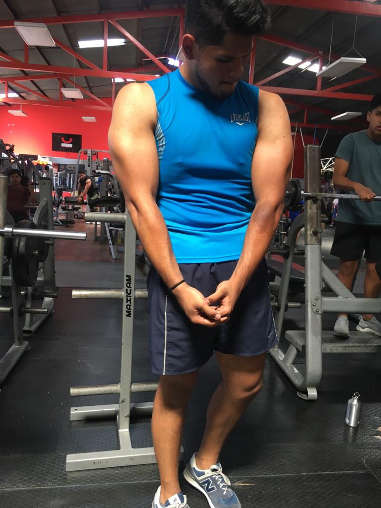
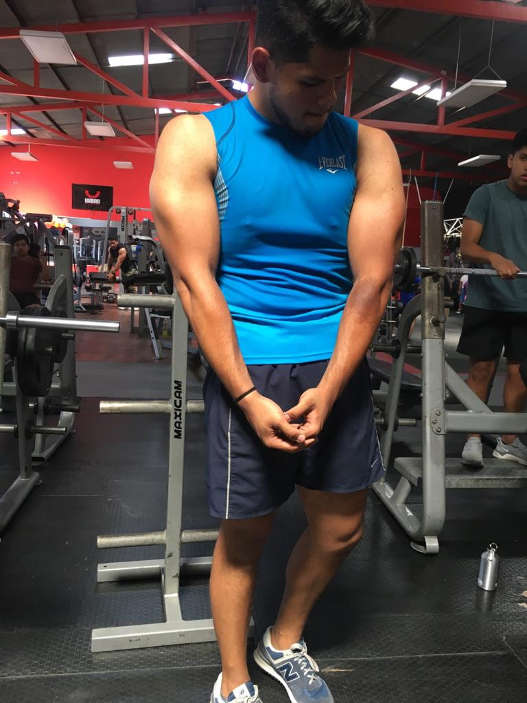
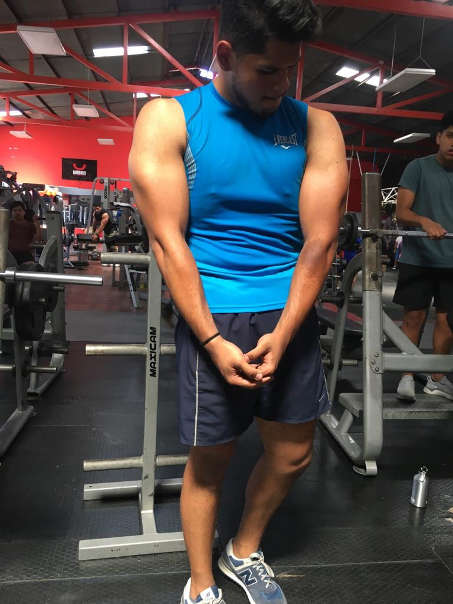

.jpg) 

Foto año 2002
Pablo Sebastian Juárez Montufar. Nació en un sanatorio ubicado en la zona 1 de la ciudad de Guatemala un 24 de diciembre de 1999. Siendo el hijo menor en un hogar Sebastian creció con total atención de su familia en toda su niñez. Formando su personalidad sociable, compasiva y divertida. Disfrutaba de actividades recreativas como el karate, futbol, clases de batería y talleres de pintura. Sobresalía siempre entre los grupos de personas por ser aquel “niño gordito” con un gran tamaño, más grande del promedio de estatura y con unas libras de más.
Lucho con enfermedades crónicas desde su nacimiento entre ellas la que predomino fue el asma. Por su sobrepeso también surgían enfermedades, siendo una situación difícil el poder corregir la alimentación de aquel niño porque toda su familia estaba acostumbrada a consentir sus antojos y verlo gozarse comiendo sus golosinas favoritas. Al paso de los años Sebastián vivió problemas familiares y a causa de esto la alimentación comenzó a ser un grave problema debido a los trastornos que estaban generando la ansiedad y demás emociones.
Después de 17 años Sebastián con 325 libras de peso tomo la decisión de hacer un cambio y en cuestión de 14 meses llego a pesar 196 libras con una rutina de 3 horas de ejercicio en el gimnasio y una dieta estructurada por el mismo.
A los 19 años Sebastián decidió comenzar a hacer levantamiento de pesas enfocado a la ganancia de masa muscular, acompañado con una dieta enfocada a la ganancia de masa, hoy en día pesando 220 libras, Sebastian brinda apoyo en estructuración de entreno y dieta a sus conocidos, también es apasionado de ser apoyo emocional para la motivación de las personas que luchan por conseguir sus metas relacionadas al nicho.
Fotos año 2020
